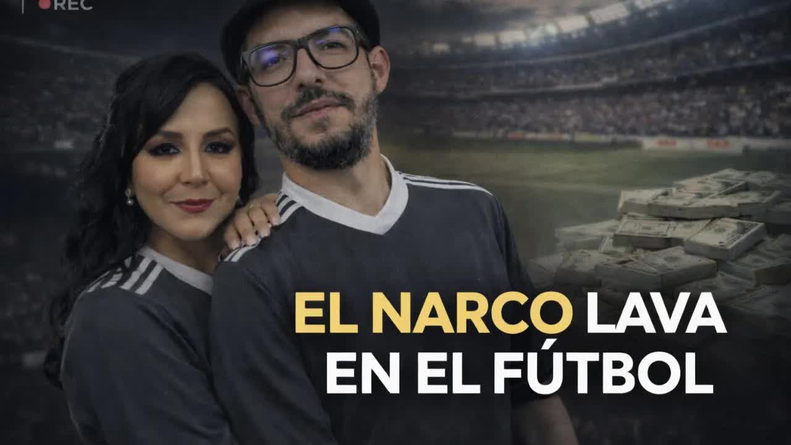
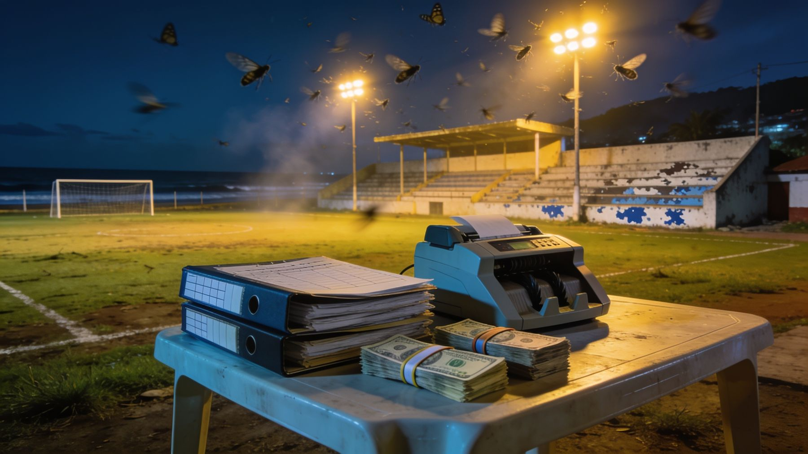

4 feb 2026 · Programa completo; el reporte arranca tras la agenda del día
Cientos de archivos contables de un club de segunda categoría de Guayaquil muestran dos contabilidades: una bancarizada, con sueldos de 460 dólares, y otra real, en efectivo, con salarios cinco veces mayores, un complejo deportivo pagado al contado y 3,5 millones de gasto en un año con ingresos de 100.000. El club lo fundó y, según fuentes internas, lo sigue manejando Héctor Pesantes, condenado por lavar dinero para la red de Dritan Gjika.

Héctor Salomón Pesantes Sangurima, policía dado de baja, fundó Agusepro, una empresa de seguridad privada con más de 340 empleados, entonces prestigiosa, que daba servicio a la Federación Deportiva del Guayas y a la Corporación Eléctrica del Ecuador, la Celec. La investigación Criminals and Contractors, de Connectas, rastreó contratos de la empresa con el Estado por 2,4 millones de dólares, sobre todo con la Celec, durante el Gobierno de Guillermo Lasso. La Celec es una de las empresas públicas que en El Gran Padrino aparecía bajo control del círculo de Danilo Carrera. Y la Celec la contrataba mientras la Policía ya tenía a Pesantes bajo investigación: desde 2021, en la operación León de Troya.
Cuando la Policía española forzó el operativo Pampa, en febrero de 2024, Pesantes apareció en las noticias como parte de la mafia albanesa en Ecuador, con el alias Glock. Su rol, según las autoridades: coordinar envíos y facilitar la logística del tráfico. Según las fuentes de esta investigación, su especialidad eran los contenedores, contaminarlos, y además le daba a Gjika anillos de seguridad para evadir a la justicia. El día del operativo, cuentan esas fuentes, se encargó de detectar cuándo las autoridades se acercaban al perímetro de Gjika y sacarlo: hubo 30 detenidos y 42 allanamientos, pero Gjika no cayó. En enero de 2025 un tribunal condenó a Pesantes a siete años por lavado de activos, dentro de una red que movió 43 millones entre 2015 y 2023. Cuando publicamos esta investigación estaba en libertad.
Yo no hacía nada. Yo lo que hacía era dar seguridad, a mí que no me metan en la historia de la mafia albanesa.
La postura de Pesantes, según la resumió Boscán en el programa
Agusepro no cerró. Cambió de manos: las acciones pasaron a Pedro Pesantes, cuñado y primo de Héctor, como había pasado con otras empresas de la red de Gjika. El Banco Pichincha, alertado por la Unidad de Análisis Financiero y Económico, cerró las cuentas de Pesantes y de sus empresas. Quedaron dos: una fundación y un club de fútbol.

Club Profesional Astillero Fútbol Club se fundó en Guayaquil en enero de 2022, en la segunda categoría. El oficio del Ministerio del Deporte del 26 de octubre de 2023 registra su directiva: presidente, Héctor Pesantes; vicepresidenta, Patricia Pilar Pesantes Cepeda, dueña del 13 por ciento de Agusepro; tesorero, Héctor Alexander Pesantes, su hijo y gerente de Agusepro; primer vocal, Javier Pesantes, su hermano. Cuatro de diez cargos. En diciembre de 2024 el club envió un nuevo informe al Ministerio y todos los Pesantes desaparecieron de la directiva; en abril de 2025 cambió de nombre a Club Deportivo Especializado Astilleros Fútbol Club, con María Elizabeth Palma como presidenta. Según las fuentes, es una prestanombres: Pesantes sigue manejando el club.
Los 26 equipos de la Serie A y la Serie B están bajo la Liga Pro, que tiene un departamento de transparencia, exige transacciones bancarizadas y reporta a la UAFE. Debajo de esa línea hay más de 200 clubes que no rinden cuentas a nadie. La Federación Ecuatoriana de Fútbol controla poco y lo poco que controla lo controla mal. Es una zona donde se pueden mover millones sin que nadie haga una pregunta. El exembajador de Estados Unidos Michael Fitzpatrick dijo que el fútbol ecuatoriano se estaba contaminando con el narco; cuando le pidieron nombres, la embajada no los dio.
Durante semanas revisamos cientos de archivos entregados por una fuente: roles de pago, registros de ingreso, documentos contables. Muestran dos realidades. En la contabilidad bancarizada un jugador cobra 460 dólares. En la real los sueldos se duplican, se cuadruplican o se multiplican por diez: ese mismo jugador recibe 2.500 al mes. La diferencia se paga en efectivo. Más del 80 por ciento de la nómina y el 90 por ciento de los demás gastos se pagan así, sin transferencia ni rastro bancario. La contabilidad paralela existe desde que se construyó el complejo deportivo.
El complejo deportivo del club, una cancha grande y una pequeña, se levantó en 2022 y costó según nuestras fuentes más de medio millón de dólares. Todo al contado: no hay un solo registro de cómo se pagó. Las canchas son, a la vez, la justificación: el club declara entre 30.000 y 50.000 dólares mensuales por alquiler, a 80 dólares la hora la grande y 50 la pequeña. Para llegar a 30.000 harían falta 600 horas al mes, la cancha ocupada veinte horas al día, de lunes a domingo. Los auspicios suman unos 100.000 al año y en 2023 y 2024 venían de empresas del propio Pesantes: Agusepro, una camaronera y un gimnasio. Según las fuentes dentro del club, el dinero llega en cajas y sobres con la orden de justificarlo, y Pesantes es quien llega a las oficinas, da las disposiciones y lleva las cajas. No llevan papeles.

La investigación se publicó el 4 de febrero de 2026 en el programa matinal de Boscán y Velásquez; el reporte circula además como video independiente. Los documentos citados quedaron a disposición de las autoridades. No se exhiben íntegros porque revelarían a la fuente. La Fiscalía acusó a Agusepro de dirigir una red de la mafia albanesa y condenó a Pesantes; no hay un proceso conocido contra el club ni una regla nueva para la segunda categoría. Gjika sigue preso en Emiratos Árabes Unidos esperando una extradición que quizá nunca llegue. Es la misma ausencia de control que permitió que 71 empresas de la red de Gjika siguieran activas después de El Gran Padrino.
Los documentos citados en esta investigación quedan a disposición de las autoridades. Tenemos a un líder de la mafia albanesa en Emiratos Árabes y sin embargo no pasa absolutamente nada.
Mónica Velásquez, 4 de febrero de 2026
La Policía pone a Pesantes en su radar mientras la Celec sigue contratando a Agusepro.
Club Profesional Astillero Fútbol Club se funda en Guayaquil y entra a la segunda categoría.
Dos canchas por más de medio millón, sin un registro de cómo se pagaron.
El Ministerio del Deporte registra a cuatro Pesantes en diez cargos.
Pesantes aparece como parte de la red de Gjika. Clientes y bancos se van.
Un nuevo informe al Ministerio borra a la familia de la directiva.
Siete años por lavado de activos. Queda en libertad.
Club Deportivo Especializado Astilleros FC, con una presidenta que las fuentes llaman prestanombres.
Boscán y Velásquez publican los archivos del club.
Fundador y expresidente del club; según las fuentes, quien lo sigue manejando. Fundador de Agusepro
Jefe de la mafia albanesa en Ecuador, según la Fiscalía
Nuevo accionista de Agusepro
Presidenta formal del club desde 2025
Según lo resumió Boscán, sostiene que solo prestaba seguridad y no tuvo relación con la mafia albanesa. No consta una respuesta formal suya para esta investigación.
Actualizado el 5 de septiembre de 2026
Ramírez. Esta es como la revista de Pancho Jaime versión YouTube, pero sin dibujitos de aquellos mi querido. Muchas gracias por tu mensaje. Buenos días, Anderson. Hachi y yo compartimos cumpleaños, dice María Paz Castro. Eh, bueno, feliz cumpleaños anticipadamente, María Paz querida, que tengas un cumpleaños espectacular. Buenos días, Anderson. Es la primera vez que te miro en sesión en vivo, ya que por mi trabajo ve…
Leer la transcripción completapersonas que nos acompañan esta mañana y es un tema que ya muchas personas lo veían venir, ¿no? Eh, no solamente el narcotráfico lava a través de los influencers, estas personas que se dedican a vender choripanes o a tener empresas de seguridad, restaurantes, gimnasios, sino que también lo hacen a través del fútbol. Es un secreto a voces, como dice el lugar común, ¿no? Todo el mundo sabe que en el fútbol pasa algo. T…
Leer la transcripción completaTranscripciones de los subtítulos automáticos de cada programa. No están corregidas a mano: sirven para buscar una frase y llegar al minuto exacto del video, no como cita textual literal.
La segunda categoría sigue sin obligación de reportar a la UAFE.
Las empresas legales del narco y la Fiscalía que no actuó
2021Los generales que cerraron León de Troya y la comandante a la que los narcos llamaban la madrina
2026Las pruebas del caso Progen que la fiscal guardó en un cajón
Las cifras de gasto, nómina y del complejo deportivo provienen de los archivos contables entregados por una fuente y de testimonios dentro del club; no se exhiben íntegros para proteger a la fuente. Pesantes tiene una condena por lavado; el club no tiene un proceso conocido.